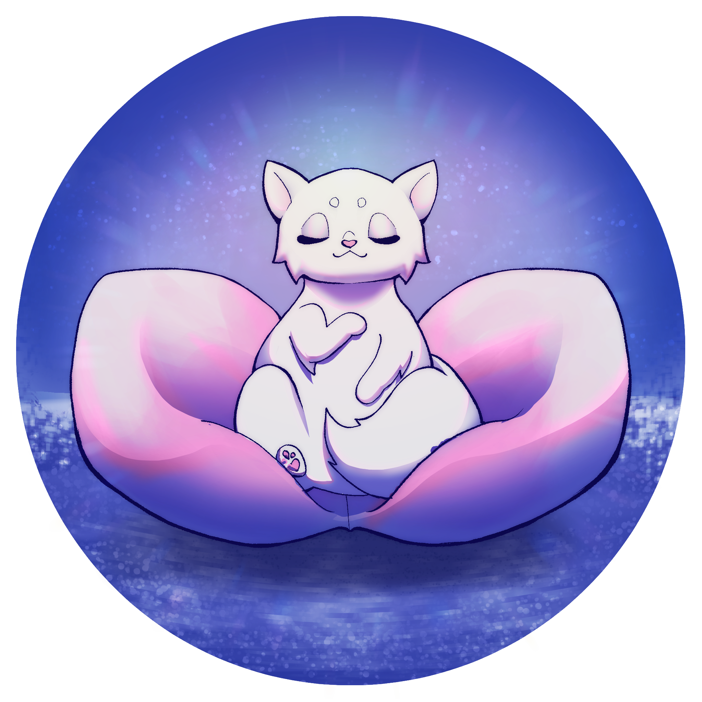
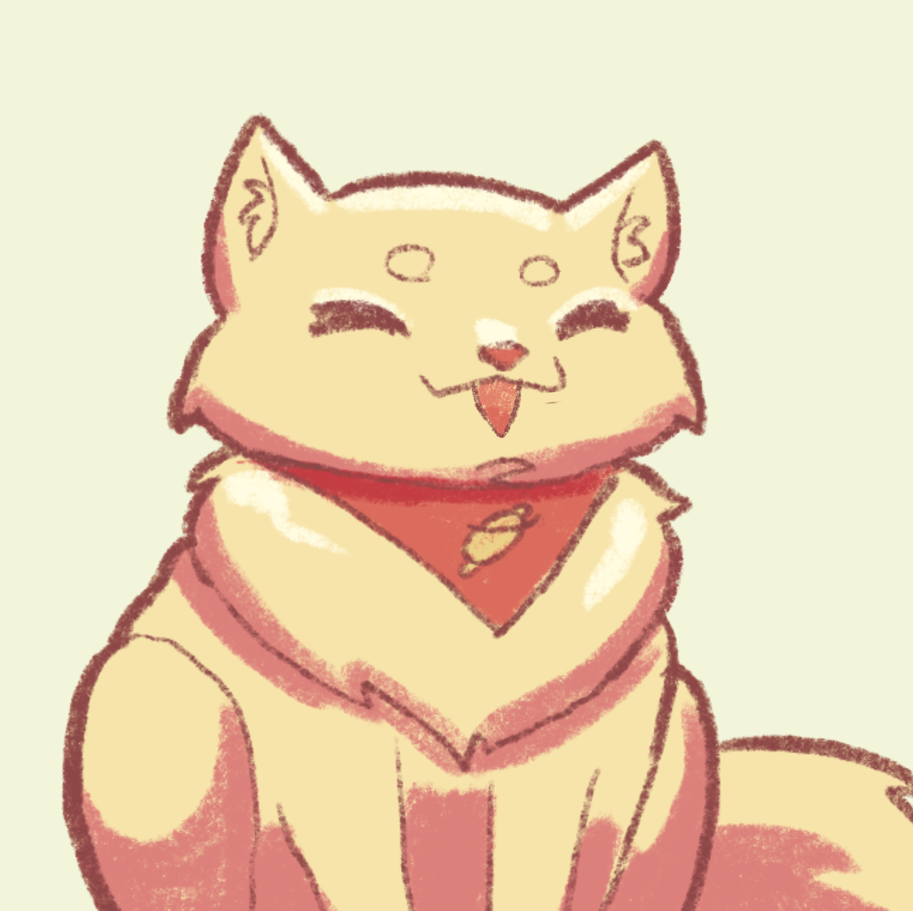
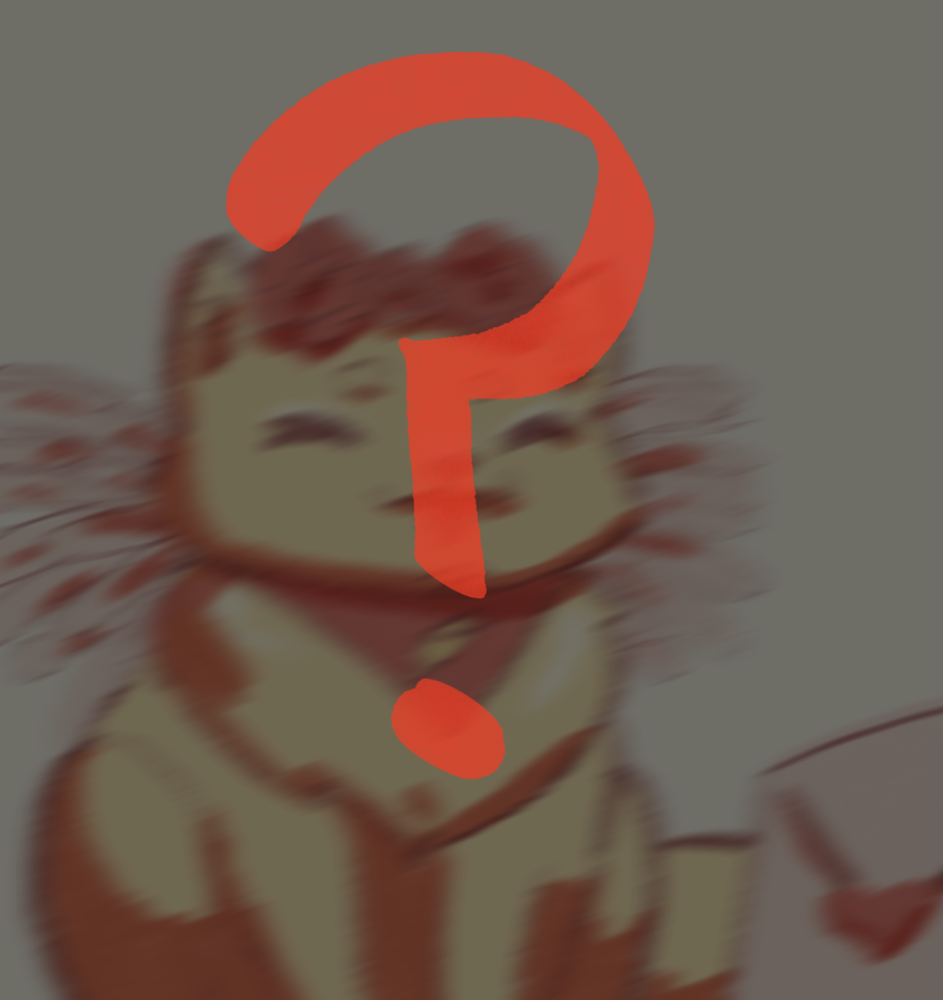

SINOPSIS
A Flower’s Dream: The Beginning es una novela visual romántica en la que podrás escoger tus relaciones a partir de tus acciones. En esta historia, tomarás el papel de un@ Florista que acaba de mudarse a una nueva ciudad, tras una situación complicada, con el objetivo de comenzar una nueva vida y cumplir uno de sus mayores sueños: abrir una floristería. Alejad@ de todo lo que conoce, tendrás que poner en marcha tu floristería, conocer a tus clientes y atender sus peticiones. Las flores y tus propias elecciones te abrirán las puertas a nuevas amistades, vivencias y… ¿Nuevos romances?
Género:
Novela visual (Dating Sim).
Audiencia:
Para mayores de 16 años.
Plataforma:
Navegadores web y dispositivos móviles.
Estado:
Disponible en Itch.io (versión Gold Master).
Advertencia de contenido:
Contenido delicado. Este videojuego contiene referencias a temas como las relaciones tóxicas, el maltrato o la violencia (escenas violentas) que algunos jugadores pueden encontrar angustiantes.
CARACTERÍSTICAS
A Flower’s Dream: The Beginning no solo se caracteriza por su misteriosa y romántica historia, sino también por sus mecánicas y opciones. En esta sección, podéis encontrar algunas de las principales características y capturas/gifs del videojuego.

Novela visual
A Flower’s Dream: The Beginning es una novela visual en la que podrás interactuar con distintos clientes que llegan a tu tienda a realizar pedidos. ¿Estás listo para elegir el rumbo de tu propia historia?
Elige quién eres
Al iniciar partida, tendrás la oportunidad de seleccionar tu nombre, avatar y género.

Pedidos y arreglos florales
No solo podrás ganar afinidad mediante tus propias decisiones, sino que deberás de crear los ramos que encajen mejor con el pedido y gustos del cliente para ganar su favor.
Citas
Los fines de semana puedes aprovechar para quedar con alguno de los intereses amorosos para profundizar la relación.

Galería de recuerdos
¿Quieres tener recuerdos de los momentos más íntimos con tus romances? No te preocupes, tienes un álbum con todos ellos esperandote con cada instante que descubras en la trama.
Múltiples finales
Al final, podrás desbloquear uno de los tres finales disponibles para cada personaje. ¿Conseguirás encontrar el amor o terminarás enemistado con todos?
PERSONAJES
Uno de los grandes puntos fuertes del videojuego son los personajes variados que lo conforman. No solo pueden ser tus posibles amigos, enemigos o intereses románticos, sino que cuentan con personalidades e historias propias. Si sientes curiosidad, ¡echa un vistazo a estas tarjetas para descubrir más sobre ellos!
¿Quieres llegar hasta el fondo de sus historias personales y conocer al resto de personajes? ¡Juega ya a A Flower’s Dream: The Beginning en Itch.io tanto en navegadores web como en dispositivos móviles!
NOVEDADES
A Flower’s Dream: The Beginning se encuentra ya al completo en Itch.io en su versión Gold Master, pero, ¿qué más se puede esperar en un futuro sobre el videojuego?
-

Próximos meses
Mejora continua
En Silver Tales Studio nos sentimos muy orgullosas del resultado final, pero siempre quedan pequeños fallos y aspectos que pulir. Nuestro primer objetivo es continuar mejorando el juego en base al feedback recibido para poder ofrecer la mejor experiencia.
-

¿Nuevo contenido?
Febrero de 2023
La historia principal de A Flower’s Dream: The Beginning se encuentra completa, pero siempre quedan preguntas por contestar. ¿Cómo se verían los personajes con otros outfits? ¿Qué hacen en las fechas importantes? ¡Estad pendientes para descubrir las respuestas a estas preguntas empezando en febrero del próximo año!
-
¡La
aventura
continua!